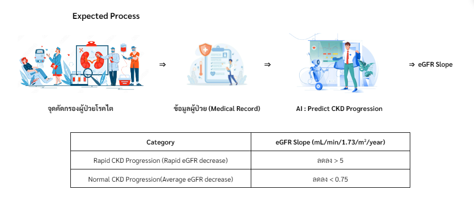

Predicting Chronic Kidney Disease Progression
Using Machine Learning and Deep Learning.
A Case Study at Srinagarind Hospital.

Abstract

The health condition known as chronic kidney disease (CKD) is defined by the kidneys'
inability to remove waste and fluids from the blood,
which can result in a potentially hazardous buildup of waste materials.
This study focuses on constructing and assessing the efficiency of models
for forecasting the pace of change in kidney filtration rates.
Finding the best model to determine risk factors and forecasting when the disease may manifest or worsen.
With the advancements in current technology, Artificial Intelligence (AI) is becoming
increasingly important in medical data processing to improve diagnostic accuracy as a result
of technological improvements. Because machine learning (ML) approaches are versatile in
creating models, they are used in this situation.
Recognizing the significance of CKD scenarios, the study proposes the application of
AI to medical data from CKD patients at Srinagarind Hospital. The objective is to create and
compare models predicting the change in estimated glomerular filtration rate (eGFR) to
identify the most efficient model for guiding suitable treatment approaches for individual
CKD patients.
The website template was borrowed from Michaël Gharbi.